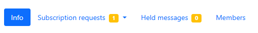
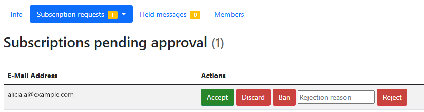
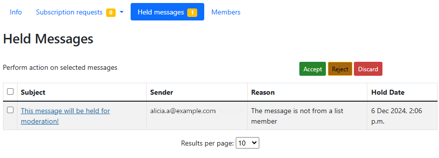
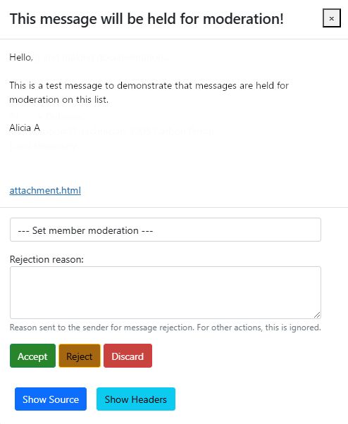

List moderation (requires Moderator role)
After signing in to the ICOS Mailing Lists home page, you can use the Moderator button in the Role Selection area to display all of the mailing lists that you are a moderator of.
In addition to the list overview, there are two additional menu options that you can use: Subscription requests and Held messages. You can also access these moderation pages by following the link in the emails that you will get as a moderator when an action is required.

Subscription requests
Clicking on the Subscription requests option will open a drop-down menu, allowing you to view different kinds of requests: those Pending Approval, Pending Confirmation, and Unsubscription Requests. Note that the number to the right of Subscription requests lists how many requests require action from a moderator.
You can click on the option from the drop-down menu to open the corresponding page.
Pending Approval is the most commonly used page, as this displays people who have put in a subscription request, confirmed their email, and are waiting for their subscription to be accepted.

Click the Accept button to allow this address on the mailing list. The Discard button will delete the request without notifying the user. The Ban button will discard the request and also prevent the user from trying to subscribe again. Finally, you can optionally enter a Rejection reason and then click the Reject button to reject the user's request and inform them of the rejection, sending the reason to them as well.
The Pending Confirmation page will show you which users have attempted to subscribe but have not confirmed their email address.
The Unsubscription Requests page will show you requests to unsubscribe from a list, if this is enabled. This is usually not enabled, so the section will simply be empty.
Held messages
If a mailing list is moderated, then messages will be held until a moderator approves them.
Note
You should approve of messages in a timely manner, as the original timestamp of the message will be maintained. So if a message is held for three months, and then approved, it will be sent at the current time but appear as though it was sent three months ago.
Click on the Held messages option and you will see any held messages displayed in a table.

If there are many messages and you do not need to view the contents, you can use the checkboxes on the table to select messages, and then the buttons above the table (to the right) to perform the bulk action of Accept, Reject, or Discard.
You can click on the Subject name of a message to view its contents, and from there, you can Accept, Reject, or Discard the message. You can also provide a rejection reason, which is sent to the sender when you reject the message.

There is also an option to Set member moderation. This allows you to set an action that should automatically be taken anytime a message from this sender is received. You can always Hold for moderation, Reject (with notification), Discard (no notification), Accept immediately (bypass other rules), or use the Default processing choice.
If you have any questions about our ICOS services or feedback regarding our documentation, you can email our User Support team at help@icos-ri.eu.